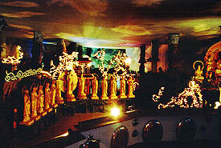

佛光山/高雄縣大樹郷
台湾最高の仏教聖地といわれる佛光山は同時に台湾最強の珍寺といってもよい。
ここの教団、佛光会は1960年代に創設された、新興の禅宗系の団体だが、現在世界各地に別院を持つ物凄い大教壇なのだ。ちなみにケーブルの専用テレビチャンネルも持ってます。
実はこの佛光山、2000年現在信者以外の入山が制限されている。
入山にはちとややこしい手続きを踏まなければならない。
（注；これは2000年8月に訪れたレポです。現在、入山の制限は解除されています）
で、入山までに色々と紆余曲折はあったがいよいよ佛光山ツアーの開始である。
いきなり入口の山門（不二門）に思いっきり「封山」とある。
寺のガイドさんのハナシでは封山の最大の理由は「観光客がゴミを捨てるから」だそうです。台湾の街中の路上を見るとその気持ちも判らないでもないような・・・
で、その門の右側にある浄土洞窟へ。
ガイドさん曰くここは雨漏りがしてるので改装中との事。しかし事前のリサーチでこの浄土洞窟こそ佛光山最大の見どころなり、という情報をつかんでいた私は頼みこんで中に入れてもらう。
薄暗い人工の洞窟は外から見るよりも大きそうだ。入ってすぐのところにいきなり「全人類仏教礼賛の図」と「全動物仏教礼賛の図」のジオラマが出迎えてくれた。これって久留米成田山にも同じものがあって、確かそっちも台湾の人の寄贈だった筈。佛光山絡みの寄贈だったのだろうか・・・
と、その時ガイドさんがおもむろにスイッチを入れた。がちゃん、という音と共に照明がつけられた。そしてそこに現れたものは・・・
うわっ、すっ凄い！
内部は体育館くらいの広さだろうか。そこにたくさんの仏像がちりばめられているのだ。一番奥には仏陀の座像。そして手前には2メートル位の五百羅漢の座像である。それらがクリスマスのイルミネーションよろしくギランギランに電飾されている光景を見て夢ではないかと思った程だ。
あまりの凄さに暫し唖然、驚愕、そして失禁（嘘）。写真がブレているのはもちろん感動にうち震えているからだよ。
この羅漢＋仏陀ホールに暫く見とれていると、ガイドさんがこっちこっちと言う。
見れば羅漢の群れの中に横道があり、嬉しい事にまだまだ続きがあるという。
鍾乳洞を模したこれまたクリスマス仕様の小部屋を抜けると、先程よりひとまわり小さいホールに出る。
おお、これまた凄い！そこは電飾＆電動仏殿だったのである。
派手にライトアップされた釈迦三尊像を中心に電飾された中華風の塔、電動人形などがところ狭しと激しい自己主張をしている。なんと添え物の蓮の花までが激しい自己アピール。再び唖然、驚愕、そして失禁（ちょっとだけ）。
クラクラになりながらもさらに先ヘ進む。
・・・その次のはホントに凄い。

見渡す限り電動、電飾、ライトアップ、黄金仏像の雨嵐である。しかもその雨嵐の中を人工の山や池や川が設けてあって、途中、太鼓橋やミニ登山などを楽しみながらぐるぐると歩いて回遊する構造になっているのだ。
もちろん道行く途中にも電動人形が細かい芸を披露してくれている。
素晴らしい、素晴らしすぎる。ハイテクハード製造世界一の工業力と中華仏教特有のくどいお味の視覚テイストが見事に結集されたハイテク寺院の地平線ともいえる仏教テーマパークである。
興奮覚めやらぬまま洞窟を出て境内を歩く。
本尊である釈迦仏、阿弥陀仏、薬師如来の三体がデカイ大雄宝殿（本堂）、全ての小窓に仏像がおさめられている玉仏堂と金仏堂、信徒の宿坊や研修所などを見てからいよいよ台湾最大の大仏、接引大仏との御対面だ。
ここの接引大仏、高さは約37メートル。日本の大仏、大観音に比べれば可愛いモンである。
が、そこは超A級珍寺の佛光山、周りが賑やかだ。大仏さんと同じポーズを決めた等身大の仏像が500体近く並んでいるのである。我々の他には参拝者などいないのだが、これだけ金の仏像が並ぶと騒々しいくらいだ。
台座にもたっぷりといます。
残念ながら胎内空間はなく、台座の中を一回りするだけだが、鏡張りの部屋に4面仏がまつられ、ゴージャス具合にとどめをさしている。
途中地蔵様をまつる地蔵殿で鐘を突いたりしながら、ようやく最初に来た不二門のところに戻る。これにて佛光山ツアーは終了。ホントは展覧館なるものがあり、すんごいお宝をいっぱい持ってるらしいんだけど暑くて疲れたのでパスしました。あと陳列館にも電飾仏陀スペースがあるらしいのだが工事中で入れなかった。
で、最後に食堂で素食という精進料理のようなモノを食べた。
これが市中の屋台の金額2倍、量は1/2だったのだが、とても美味しかったことを付け加えておく。
ガイドさんと別れ、門の外に出た。まさに超ド級の珍寺であった。ホントにここに来れて良かったよお〜。
とゆーわけでマイ珍寺世界遺産に登録決定！
異様に充実の内容。世界制覇も夢じゃない!?佛光山ホームページ
追記
2001年1月１日をもって佛光山の入山が一般観光客に解放されました。
現在はスムーズに入山出来るようになりました。でも境内にゴミを捨てちゃだめだよ。
台湾大仏列伝2のページへ
珍寺大道場
HOME